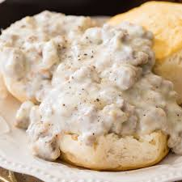

Biscuits and Gravy

Description
This is the recipe on how to make buttermilk biscuits covered with a
homemade country gravy.
Ingredients
- 1 (16oz) can regrigerated jumbo buttermilk biscuits
- 1 (9.6oz) package of sausage
- 1/4 cup of flour
- 2 1/2 cups milk
- Salt and black pepper to taste
Steps
- Preheat oven to 350 degrees. Arrange biscuits 1 to 2 inches apart
on an ungreased cookie sheet. Bake in the preheated oven until
golden brown, about 13 to 15 minutes.
- Meanwhile, cook sausage in a large skillet over medium heat until
thoroughly heated, stirring frequently, about 5 to 6 minutes.
- Stir in flour until well combined. Gradually add milk, stirring
continuously, until the gravy thickens and comes to a boil. Reduce
heat to medium-low: simmer and stir for 2 more minutes. Season to
taste with salt and pepper.
- Split biscuits in half. Place 2 halves on each of 8 plates:
top with about 1/3 cup gravy.
Return to homepage